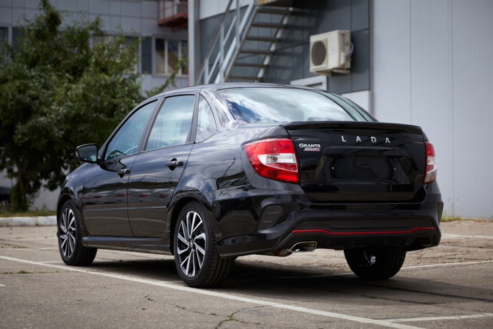

LADA Granta (Лада Гранта) — семейство переименованных моделей российских переднеприводных автомобилей малого класса Волжского автомобильного завода, ранее носивших название «Лада Калина», выпускаемых с 2011 г. Первоначально семейство состояло из упрощённого, удешевлённого, отделённого от семейства «Калина» кузова типа седан и созданного на его основе кузова лифтбек, а с 2018 года — также включает в себя все остальные типы кузовов семейства «Калина». Выпуск начался 16 мая 2011 года, продажи — в конце декабря 2011 года.
Изначально проект (внутризаводское обозначение автомобиля — ВАЗ-2190) имел рабочее название «Low cost» (низкая стоимость). Название для автомобиля было выбрано из нескольких тысяч вариантов, присланных в рамках объявленного АвтоВАЗом конкурса «Народному автомобилю — народное название». Победителем конкурса стал житель Красноярска Павел Захаров. В качестве награды автору названия LADA Granta в ходе Московского автосалона 2010 года была торжественно вручена LADA Kalina.
В ходе ММАС-2010 президент ОАО «АвтоВАЗ» Комаров И. в интервью изданию «Газета.ru» заявил, что предполагаемая стоимость седана LADA Granta составит 220 000 рублей на момент начала производства. Повышение цен относительно «классических» моделей (Lada 2105 и Lada 2107) Комаров обосновал тем, что Granta является более комфортным, современным и безопасным автомобилем. Тогда же была озвучена информация о том, что LADA Granta на российском рынке появится к концу 2011 года. Позднее было объявлено, что цена Granta в базовой комплектации составит 229 000 рублей. Повышение цены, главным образом, связано со стоимостью подушки безопасности водителя, которая, вопреки первоначальным планам, будет устанавливаться на все автомобили, включая базовую комплектацию. Так же на начальную цену повлияло наличие крепления детских сидений ISOFIX и соответствие токсичности выхлопа требованиям стандарта Eвро-4.
В марте 2011 г. АвтоВАЗ подписал соглашение со словенской компанией «TPV Group» на производство и поставку компанией автомобильных сидений на модели «LADA Granta».
Премьера автомобиля состоялась 11 мая 2011 года в рамках Съезда Союза машиностроителей России в Тольятти.
16 мая 2011 началось серийное производство автомобиля.
В 2015 году произошли небольшие изменения машины: заменён передний бампер, начали ставиться новые зеркала с повторителями, а шильдики переехали вверх.
16 мая 2011 г. на конвейере АвтоВАЗа началась сборка автомобилей LADA Granta в тестовом режиме. Начало серийного производства новинки было начато в октябре 2011 года. За это время на Волжском автозаводе была отработана технология выпуска новой модели. Начало продаж намечено на 1 декабря 2011 года. За два месяца приёма заявок, который был открыт 8 сентября 2011 года, более 20 тысяч россиян изъявили желание приобрести этот автомобиль. Со старта продаж и по настоящее время Lada Granta доступна в кузове «седан», хетчбэк и спорт. Выпуск топовой комплектации седана LADA Granta начался летом 2012 года. Она оснащается 98-сильным мотором. Согласно сайту Авто.Вести.Ru, очереди на LADA Granta в течение первого месяца с начала продаж растянулись до февраля-марта 2012 года. Премьер-министр России Владимир Путин во время посещения Тольятти с рабочим визитом 11 мая 2011 года участвовал в испытаниях автомобиля. На автомобиле, специально приготовленном для теста, «сразу поехать не удалось» (машина завелась лишь с пятого раза), на что Путин ответил, что просто не был осведомлён о наличии «электронной педали газа». Председатель Правительства назвал LADA Granta будущим «народным автомобилем».
LADA Granta — первый автомобиль АвтоВАЗа, на который автоматическая коробка передач устанавливается серийно на конвейере. Это четырёхдиапазонный автомат японской фирмы Jatco, разработанный на базе модели JF414E, производящейся в Японии с конца 80-х годов. Лада Гранта получила современную модификацию этого автомата, которая также устанавливается и на ряд автомобилей Nissan, например, на модель Note.
В конце мая 2013 года «АвтоВАЗ» отозвал несколько десятков тысяч проданных автомобилей LADA Granta в связи с обнаруженными проблемами в системе управления подушками безопасности.
В ноябре 2015 года начался выпуск седанов LADA Granta в Чечне на предприятии «Чеченавто».
LADA Granta поступила в продажу 22 декабря 2011 года по цене 229 000 рублей в комплектации «стандарт» и 256 000 рублей в комплектации «норма». Самая дешёвая комплектация LADA Granta — «стандарт» — впоследствии несколько раз дорожала. С 1 апреля 2012 года LADA Granta подорожала на 10 000 рублей, седан в комплектации (до 239 000 рублей). А со 2 июля 2012 года произошло ещё одно повышение цены: теперь самая дешёвая комплектация стоит 259 000 руб. АвтоВАЗ объяснил это «несоответствием реальной рыночной и заявленной стоимости», а также ажиотажем и массовым завышением стоимости со стороны дилеров. С 2013 года самая дешёвая комплектация стоила 279 000 руб. На конец 2014 года минимальная цена (модификация 1.6 МТ стандарт) составляла 293 600 руб. К концу 2017 года минимальная цена на комплектацию «Стандарт» составляет 389 900 руб., в 2018 — 400 000 руб., в 2019 — 435 000 руб., в 2020 — 456 000 руб., в 2021 — 489 000 руб., в январе 2022 — 588 000 руб.(согласно другому источнику, 598 900 руб.), 01.03.2022 — 684 900 руб., 16.03.2022 — 727 900 руб.
Эта цена сохранялась до мая 2022 г., когда выпуск LADA Granta в комплектации Standart был прекращён. Данная комплектация была исключена из официального прайс-листа АвтоВАЗа, и самой дешёвой моделью становится LADA Granta седан в комплектации Classic по цене 761 500 руб. 16 июня 2022 г. АвтоВАЗ объявляет о старте продаж модели LADA Granta Classic’22 по цене от 678 300 руб. или от 658 300 рублей по трейд-ин или по программе LADA FINANCE, что "на 103 200 рублей выгоднее стоимости Granta Classic предыдыщего модельного года". По состоянию на июль 2022 г., от комплектации Classic комплектацию Classic'22 отличает отсутствие подушки безопасности водителя, иммобилайзера, системы ЭРА-ГЛОНАСС, антиблокировочной системы с электронным распределением тормозных сил (ABS, EBD), системы вспомогательного торможения (BAS), подсказчика переключения передач, а также отсутствие возможности приобретения набора аксессуаров и таких дополнительных опций, как система электронного контроля устойчивости (ESC), противопробуксовочная система (TCS) и кондиционер.
В марте 2013 года был официально представлен вариант с кузовом лифтбек. Кроме формы кузова, он отличается от седана задним бампером, формой задних боковых дверей, расположением заднего номерного знака. 14 мая 2014 года на предприятии «Иж-Авто» начался серийный выпуск этой модификации «Гранты» (внутризаводское обозначение автомобиля — ВАЗ-2191). Новинка, которая ранее называлась представителями «АвтоВАЗа» хетчбэком, теперь будет продаваться как LADA Granta Liftback. Объём производства в 2014 году составил 47 тысяч автомобилей. Продажи новинки стартовали в июне.
LADA Granta Sport была представлена в 2011 году одновременно со стартом гоночного Кубка LADA Granta. Из особенностей версии: 16-дюймовые литые диски, низкопрофильные шины «Yokohama», передние и задние тормозные диски увеличенного диаметра, уменьшенный на 20 мм дорожный просвет и газонаполненные амортизаторы.
Производство обновлённой LADA Granta началось 14 августа 2018 года. Премьера состоялась 29 августа 2018 года на Московском международном автосалоне. Платформа модели осталась прежней, а количество изменений свойственно для рестайлинга, поэтому ряд ведущих автомобильных изданий России называет проведение обновления модели именно рестайлингом, а не новым поколением. Поэтому семейство после проведённого рестайлинга получило неофициальное название LADA Granta FL (сокращение от слова Facelift). Сам завод ВАЗ именует обновлённое семейство «Новая LADA Granta». Продажи новинки начались 1 сентября 2018 года, 25 декабря стартовали продажи коммерческих автомобилей Lada Granta. 8 февраля 2019 года АвтоВАЗ представил учебный вариант Lada Granta, предназначенный специально для автошкол.
В обновлённое семейство LADA Granta, помимо автомобилей с кузовами седан и лифтбек, вошли хетчбэк и универсал, представляющие собой обновлённые LADA Kalina (бренд Kalina прекратил существование).
В июне 2017 года LADA Granta впервые с мая 2016 года стала самым продаваемым автомобилем на российском авторынке.
В 2019 году появилось несколько новых модификаций:
В 2020 году появилось также несколько новых спец-серий:
Подразделение АВТОВАЗа «ВИС-АВТО» на платформе «Lada Granta» выпускает специальные коммерческие фургоны и авторефрижераторы различного назначения.
Из-за нехватки импортных комплектующих, возникшей в результате санкций, автомобили выпуска 2022 года не имеют подушек безопасности. Отсутствует также антиблокировочная система тормозов, электронная система устойчивости и устройства натяжения ремней безопасности.
В ноябре 2023 АвтоВАЗ заявил о абсолютном максимуме продаж своих автомобилей за последние 10 лет. При этом Granta стала самой популярной моделью. За неполный 2023 год было продано 20 928 автомобилей.
На автомобиль ставились три типа двигателей в зависимости от исполнения (комплектации) машины:
Пятиступенчатая механическая коробка передач — практически такая же, как и у «Калины». Осенью 2012 года на машину начали устанавливать модернизированную коробку передач с индексом ВАЗ-2181. Она имеет новый механизм выбора передач, тросовый привод, двухконусный синхронизатор первой и второй передачи, уменьшенную заправочную ёмкость. Все это позволило уменьшить люфты и хода рычага, снизить усилие на рычаге. Новую коробку передач ставят на модификацию ВАЗ-21901 с двигателем 1,6 л (90 л. с.). Схема переключения передач такая же, как и на классических «Жигулях». КПП LADA Granta Sport отличается передаточным числом главной передачи (4.3).
Дорестайлинг: седан, лифтбек, спорт:
Рестайлинг:
Granta Cross, Granta Hatchback (бывшие Kalina):

Granta Drive Active("Упрощённая" Спорт. В отличие от Спорт версии, эта версия лишилась задних дисковых тормозов, передних 16" тормозов, "спортивного" двигателя):
Granta Sport рестайлинг (Так же появилась в кузове лифтбек):
